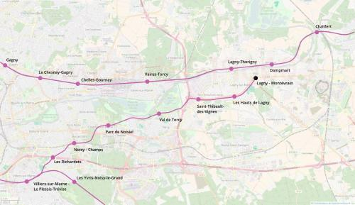

RER E Lagny
RER E Lagny
Villiers-sur-Marne - Lagny-sur-Marne
Une extension de la ligne E du RER.
Une nouvelle branche du RER E serait créée entre Villiers-sur-Marne et Lagny-sur-Marne pour offrir une alternative au RER A en cours de saturation entre Fontenay-sous-Bois et Torcy et une alternative à l'autoroute A4 pour rejoindre Paris.
Cette extension offre la possibilité de desservir la base de loisir de Torcy, le nouveau pôle de correspondances de Noisy-Champs et de créer une correspondance RER-autoroute (A4) au niveau du quartier des Richardets à Noisy-le-Grand.
La section Villiers-sur-Marne - Noisiel pourra avoir une infrastructure partagée avec le métro 15.
Voir les autres projets associés à cette ligne
Carte

Cliquer pour agrandir
Stations
| Nom | Correspondances | Communes |
|---|---|---|
| Villiers-sur-Marne - Le Plessis-Trévise | ||
| Les Richardets | ||
| Noisy - Champs | ||
| Parc de Noisiel | ||
| Val de Torcy | ||
| Saint-Thibault-des-Vignes - ZA | ||
| Hauts de Lagny | ||
| Lagny - Montévrain |
Si ce projet vous intéresse n'hésitez pas à le (re-)partagez sur les réseaux sociaux ou par courriel ou à en parler autour de vous.
Si vous souhaitez travailler à la concrétisation de ce projet, passez à l'action et contactez nous.
Commenter